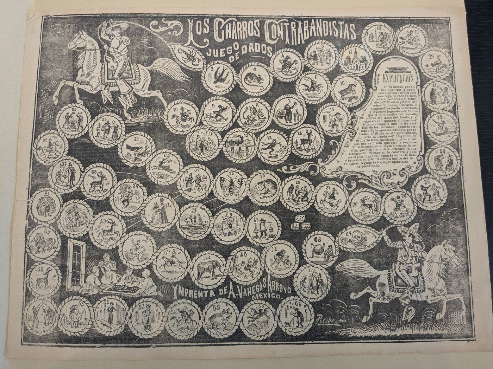
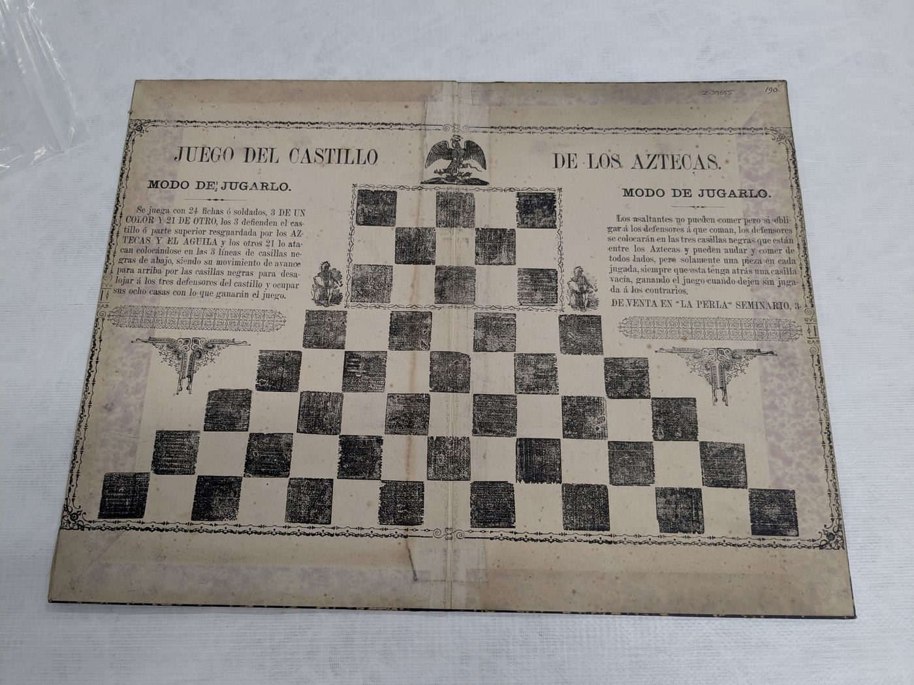

Why am I playing?
Nineteenth-century Mexican board games contributed to the construction of racial imaginaries. When you play these games, try to identify the racial ideas built into the gameplay. This type of cultural production was more than just fun and games.
The Collection

La Guerra de los Kikapoos
"The Kickapoo War"
A checkers-style capture game imagining conflict along the Rio Grande — sixteen pieces and two territorial commanders per side, with mandatory captures and multi-jump chains. What does the player perspective tell you about nationalism?

Los Charros Contrabandistas
"The Cowboy Bandits"
A 64-space dice race across urban and rural Mexico. Roll, move, and try to outrun the field to the finish. See what types of characters you encounter.

Juego del Castillo de los Aztecas
"The Game of the Aztec Castle"
A two-player siege game rebuilt from a nine-row antique board: attackers press in from the camp, defenders hold the castle. No dice — just position and nerve. What does this game suggest about national identity?